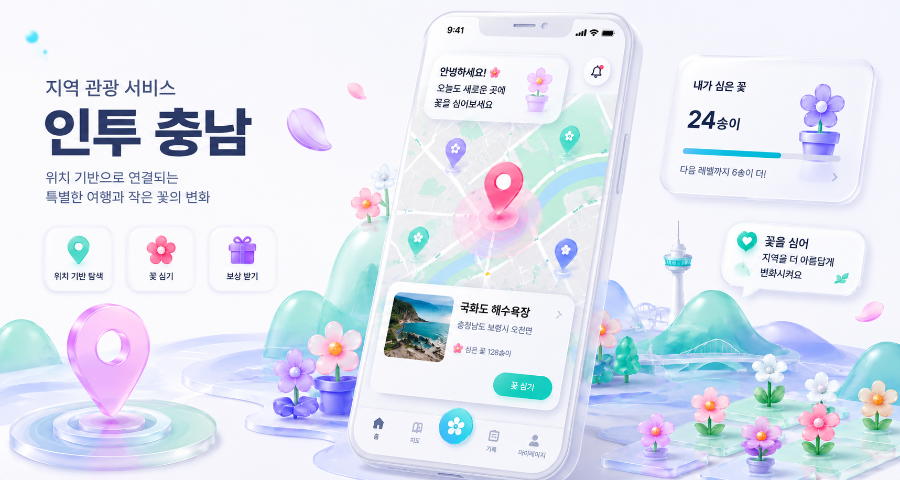

Project인투충남
인투충남은 충남 지역 관광 정보를 위치 기반으로 연결하는 지역 관광 서비스 프로젝트입니다. 사용자의 위치와 관심사를 바탕으로 주변 관광지, 로컬 콘텐츠, 체험 요소를 자연스럽게 탐색할 수 있도록 기획하고 있습니다.
단순한 관광 정보 제공을 넘어, 사용자가 여행지에서 직접 참여하고 기록할 수 있는 경험형 서비스로 발전시키는 것을 목표로 하고 있습니다. 이 프로젝트를 통해 서비스 기획, 화면 구성, 사용자 흐름 설계, 개발 과정 전반을 경험하며 아이디어를 실제 서비스로 구체화하는 역량을 키워가고 있습니다.